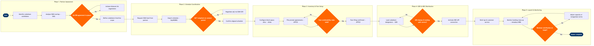

| Step | L4 Step Name | KPI / Target | Pain Point / Risk | Gate |
|---|---|---|---|---|
| 1.1 | Identify codeshare & interline partner candidates | Min 5 candidate partners assessed per planning cycle | OAG data latency (updated weekly) may miss recent partner schedule changes; analysts must cross-check with SSIM direct feeds | |
| 1.2 | Analyse partner O&D network overlap and revenue potential | Projected incremental load factor contribution ≥3 ppts on thin O&D routes | SkyCAST O&D demand models assume point-to-point flows; interline connecting itineraries require manual traffic splitting adjustments | |
| 1.3 | Verify IIA and SPA agreement status with legal | Agreement status verified within 2 business days of partner selection | IATA IIA registry updates lag actual bilateral negotiations by up to 30 days; expired SPAs may not be flagged in the finance system | ⚠ |
| 2.1 | Request SSIM schedule data feed from partner airline | SSIM file received and validated within 5 business days of partner agreement | Non-IATA partners (charter, regional) may supply non-standard SSIM variants requiring manual field mapping before SkyWORKS can import | |
| 2.2 | Validate connection times against airport MCT tables | 100% of proposed connect itineraries MCT-compliant before GDS loading | MCT tables vary by terminal and domestic/international split; SkyWORKS uses airport-level MCTs and may not reflect terminal reassignments after gate changes | ⚠ |
| 2.3 | Resolve schedule conflicts via SSIM SCR negotiation | Schedule conflicts resolved within 10 business days; <5% of proposed connections requiring rescheduling | Partner airlines prioritise own network optimisation; schedule adjustment requests are often rejected or delayed beyond SSIM submission deadlines (D-180) | |
| 2.4 | Confirm aligned codeshare schedule and flight numbering | Codeshare flight numbers registered with IATA within 7 days of schedule confirmation | Duplicate flight number conflicts with own metal flights require manual deconfliction; SkyWORKS does not auto-detect cross-carrier designator clashes | |
| 3.1 | Configure block-space or free-sale inventory allocation | Block-space utilisation target ≥70% within 30 days of schedule launch | Free-sale arrangements require real-time availability sharing via IATA Type B TELETYPE or PADIS; latency >500ms causes ghost availability in partner booking systems | |
| 3.2 | File interline prorate and SPA agreements via ATPCO | ATPCO filing effective within 24 hours of D-1 activation date; 0 unpriced itineraries at launch | ATPCO prorate amendments require 3–5 business days for GDS propagation; last-minute schedule changes can create gaps where interline fares are unresolvable | |
| 3.3 | Validate fare combinability and through-fare rules in PSS | 100% of marketed O&D pairs have at least one priceable interline itinerary at launch | Global Indicator and Routing restrictions in ATPCO records frequently cause combinability failures for multi-sector interline itineraries that are not caught until passenger booking attempts | ⚠ |
| 4.1 | Load codeshare designators into GDS participant tables | GDS loading complete ≥14 days before first codeshare departure | Each GDS has separate participant-table submission portals with different lead-time requirements (Sabre: 14 days, Travelport: 10 days, Amadeus GDS: 7 days); misaligned loading creates uneven availability windows | |
| 4.2 | Validate end-to-end booking and ticketing path in GDS | Zero pricing errors in UAT across 100% of marketed O&D pairs before go-live | Travelport Galileo and Worldspan display codeshare availability differently from Sabre; availability masking rules may suppress partner availability in certain agencies without explicit GDS-specific configuration | ⚠ |
| 4.3 | Activate NDC API connection for partner direct-channel booking | NDC channel contributing ≥10% of codeshare bookings within 90 days of launch | Many regional and medium-haul interline partners are not NDC Level 3 certified; interline itineraries in NDC require bilateral offer/order linking that is not yet standardised across vendors | |
| 5.1 | Brief operations and customer service on interline procedures | 100% of affected airport stations briefed ≥7 days before first codeshare departure | Interline baggage tag reconciliation between dissimilar PSS platforms (e.g. Altéa vs Sabre PSS) causes baggage misrouting; SITA AMS does not auto-validate cross-carrier bag tags at transfer points | |
| 5.2 | Monitor codeshare booking ramp-up and yield metrics | Codeshare load factor ≥70% by week 4 post-launch; interline yield within 5% of target prorate | Amadeus NRM O&D attribution for codeshare legs requires manual segment-level override; automated RM bid-price optimisation does not natively distinguish codeshare pax from own-metal pax in mixed itineraries | ⚠ |
| 5.3 | Conduct 90-day post-launch performance review | Incremental revenue per ASK (RASK) contribution ≥2% above baseline on target O&D pairs | Prorate settlement data from IATA BSP/ACH arrives 60–90 days in arrears, making 90-day review reliant on estimated yields; actual margin impact may not be known until Q2 following launch | ⚠ |